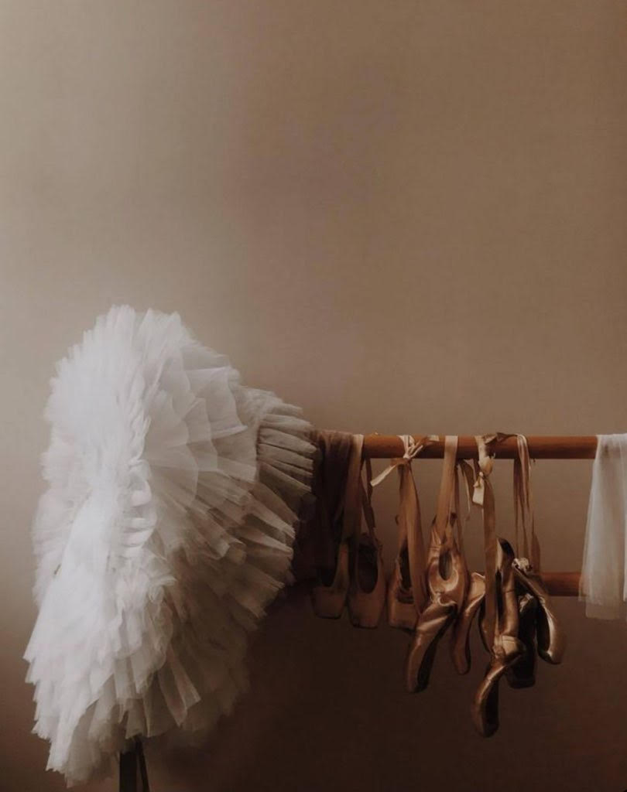
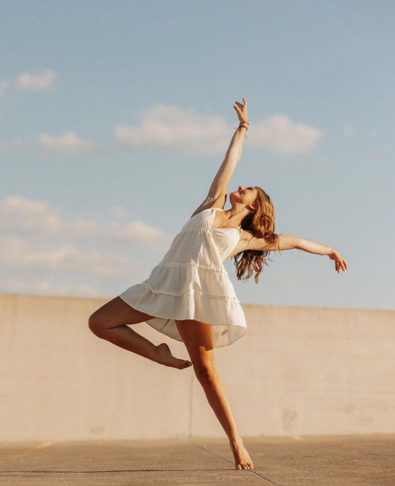
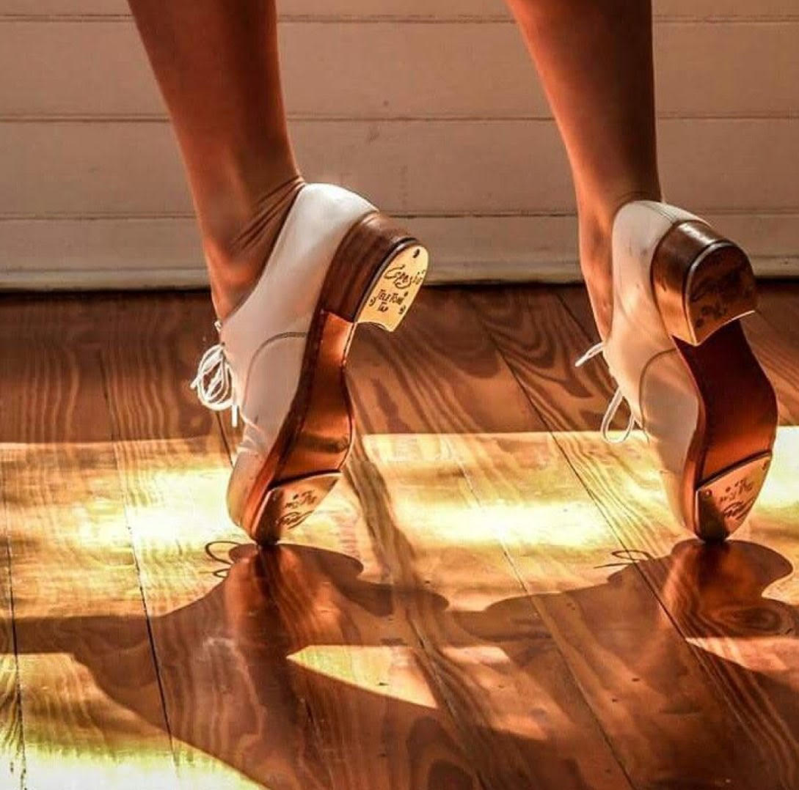

Ballet
Ballet is a genre of dance that refines technique, your mind, and your body. This is a great fundamental class to take, even if you don't plan on sticking with it later. Most other genres have roots in ballet, so it is a great class to start with and stick with. For ballet you must wear a leotard of your choice and tights. You also must wear ballet shoes.
Jazz
Jazz is a great style to pump up some energy and keep your blood flowing. It uses more fun music so you can freely move around and stylize your dancing. Those taking this class are allowed to wear loose warm up attire and jazz shoes.
Tap
Tap is a style that requires tap shoes. This type of dance is rhythem based and has you make sounds with metal plated shoes --> called tap shoes. Not only does this style require sound, but it also has you use your arms to have a more visual and entertaining effect.